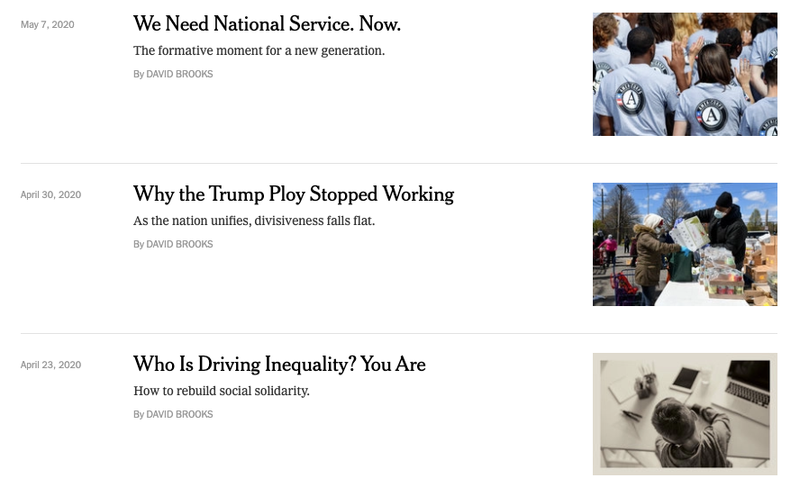

It's usually possible
Some questions to ask yourself when data-reporting a story
A Little Learning Lab by Clayton Aldern for Grist
(Press the space bar to advance the slides!)
What is data reporting?
I'm not sure; I just thought it sounded good.
I think it mostly means applying the tools of reporting to the problems of data science.
We usually think of data journalism the other way around, i.e. as complementing the tools of reporting with contemporary analytic techniques.
The point is: You already know how to do this.
Why let data problems off the hook? You wouldn't do the same with your sources.
Today: some questions to ask
Next time: some tools to use
Question 1: Do I need (more) data?
That is, do I need data to answer a question I'm posing in this story?
Ask yourself this question when you're starting to feel a hunch coming on.
'Data' refers to both qualitative and quantitative information.
Answer: ¯\_(ツ)_/¯
I dunno. It's your story. If you're Tom Friedman or David Brooks, why bother?
For the rest of us, that 'hunch' might also be viewed as a 'hypothesis'. So: The scientific method might be helpful here.
Question 1 rephrased, maybe: What would it take to prove my hunch wrong?

The point: Data are just other sources. Interrogate them accordingly.
Which brings us to Question 2.
Question 2: What else might explain my observations?
Claim: Science (and reporting?) advances through falsification, not discovery.
But: Multiple hypothetical processes can lead to the same observations.
And: Multiple models can be consistent with single processes.
And: Multiple hypotheses (explanations) can be consistent with single processes.
So ... statistics? Null hypothesis significance testing?
Not really. We're actually talking about the opposite of p-values.
For the STS nerds in the room, we want a more purely Popperian mode of falsification.
Yes, you're challenging prevailing logic in your reporting. But to make it water-tight, you're also trying to prove yourself wrong.
That's the theory, at least.
In practice...
Question 3a: What do we already have?
Table in a PDF? Data.
Folder of PDFs? Data.
Directory of files on a website? Also data.
Text on a website? Data. (Has it changed over time?)
Cat photos? Obviously data.

Often, structured data already exist. You just have to dig for the structure.
Not really sure where this metaphor is going...
Question 3b: What's missing?
Or: What assumptions—explicit or implicit—are you making?
The data are probably out there.
When in doubt, Google (er, DuckDuckGo) is your friend.
And: Don't forget about your browser's Inspect tool.


(Of course, it's not all about scraping.)
Question 4: Not really a question. More like a set of sub-questions to ask at each decision point.
- What is my hypothesis?
- How can I test it?
- Does my result suggest causation—or merely a sad case of correlation?
- Is the correlation still interesting?
- Did that person just lie to me?
- Has this thing changed over time?
- Would building a model help tell the story more clearly?
- More...
Question 5: Do I need (more) data?
Yes, this question is the same as Question 1.
What I'm trying to say is: I'm not particularly interested in the deification of quantitative information.
In fact, I think leaning on constructions of so-called 'objective' realities via data analysis can be quite dangerous!
Really, the question here is: What will make the story the strongest?
Thanks!
Contact: Clayton Aldern | Grist